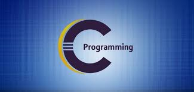

Introduction:-
You probably know that computers don't communicate with each other the way that people do.
Instead, computers require codes, or directions. These binary codes and commands allow computers to process needed information.
Every second, billions upon billions of ones and zeros are processed in order to provide you with the information you need.
So what does that have to do with your ability to post your latest pictures online? Everything.
The methods by which computers communicate with each other through the use of markup languages and multimedia packages is known as web technology.
In the past few decades, web technology has undergone a dramatic transition, from a few marked up web pages to the ability to do very specific work on a network without interruption.
Let's look at some examples of web technology.
Motive of this website:-
- The motive of the project portal developed by students for the students.
- It's plan is to adopt the continious improvement and approach.
- This website is very helpfull for the basic learner of programming using C.
Concept Of Programming Using C

- C is a procedural programming language.
- It was initially developed by Dennis Ritchie in the year 1972.
- It was mainly developed as a system programming language to write an operating system.
- The main features of C language include low-level access to memory, a simple set of keywords, and clean style, these features make C language suitable for system programmings like an operating system or compiler development.
- Many later languages have borrowed syntax/features directly or indirectly from C language.
- Like syntax of Java, PHP, JavaScript, and many other languages are mainly based on C language.
- C++ is nearly a superset of C language (There are few programs that may compile in C, but not in C++).